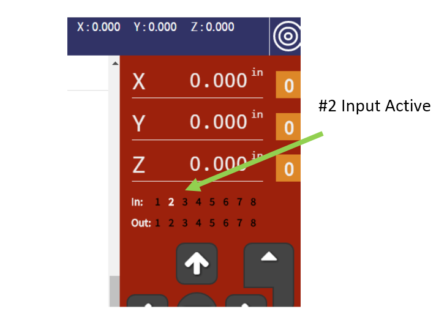

CURRENT UPDATES NEEDED:
GENERAL TESTS (no cutter in yet!)
1. Running the homing routine is always a good start and a good test. You can't do it to often -- feel free to run with Macro #3 as well. Watch for binding and inconsistent return to starting location.
Set Your XYZ HOME LOCATION
Clear area around the tool first!
2. Make Sure ALL Inputs are Working
Inputs show up in the DRO DISPLAY as shown below. There are 3 Inputs to CHECK.

Check These
- Check GREEN BUTTON on tool (#2)
- Check RED BUTTON (#4)
- Check LID (#3 should come on when lid opens)
- Check Z-Zero Clip (#1 when clip touches Zeroing-plate)
3. We want to make sure all the axes are running correctly and there is no binding.
Start Motion TEST
Put in Cutter, Set Z, and Adjust Plate
Now we're ready to insert the V-bit, Zero it, and adjust the Zero plate offset measurement.
First Put in the V-bit cutter.
Then we'll do the Z-Zero routine, just click button here.
Run the Routine to Set the Cutter Zero (Macro#2)
Next we'll maske sure the plate height is correct.
Run the Plate-Adjustment Routine (Macro#77)
Now Ready to Do Test Cut
This routine will automatically put the test file at the back of the sample board.
Test Preparation:
- Switch the router to ON, and set speed 4 on the router dial.
- Dust ?
- Close the hood
- Now you're about to run the same test file the customers will cut in the front of the panel ...

Run the "Test-Carve"
Select and Print Labels [use SnagIt]
To Print Label: Start SnagIt and capture label area, then send to printer (Ctl-P).
Copy and paste serial number and order info into spreadsheet if we've decided to track this way.
This is your Handibot's serial number and temporary name. Select it in the Wifi manager of your PC or mobile device for AccessPoint link directly to your tool.
Use the "FabMo Minder" from docs.handibot.com for identifying your Handibot after you have put it on a network.